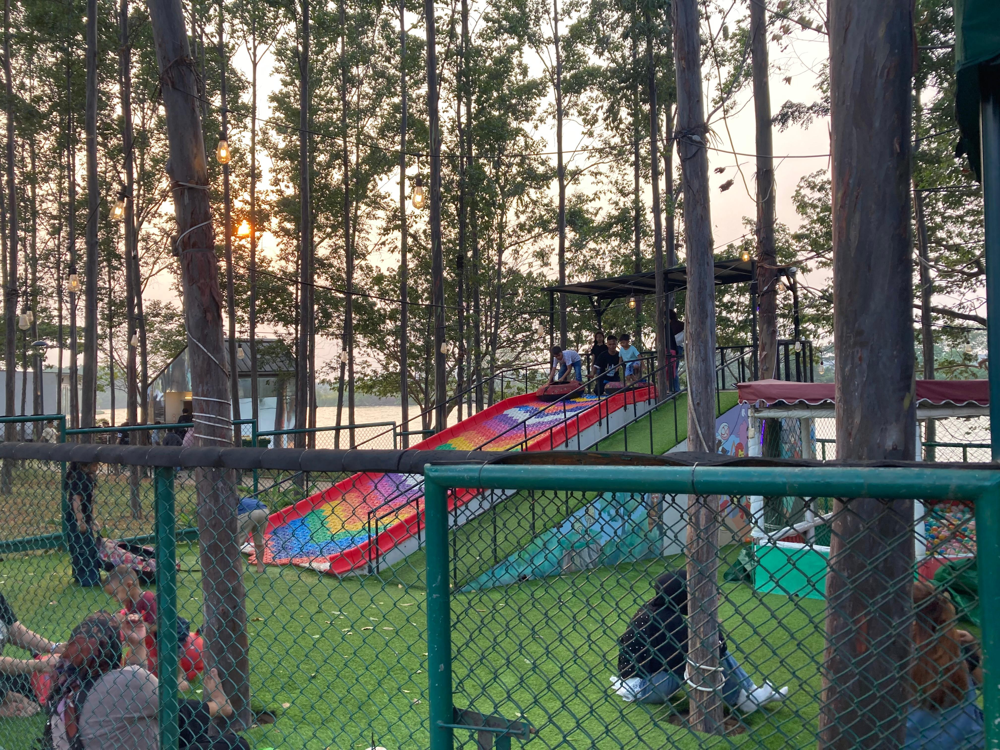
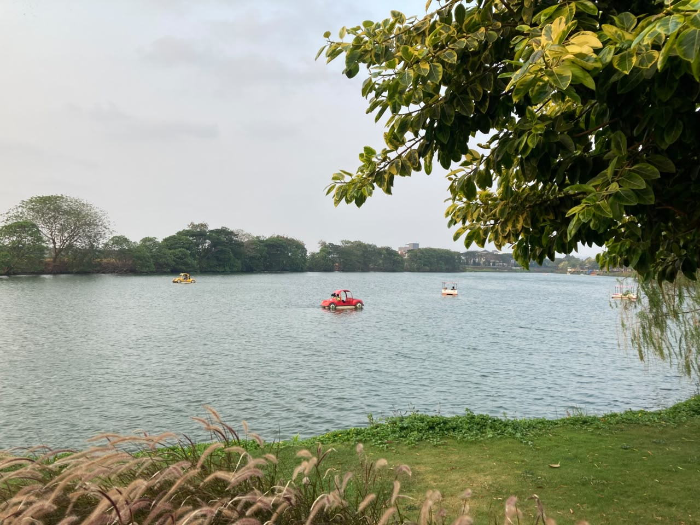
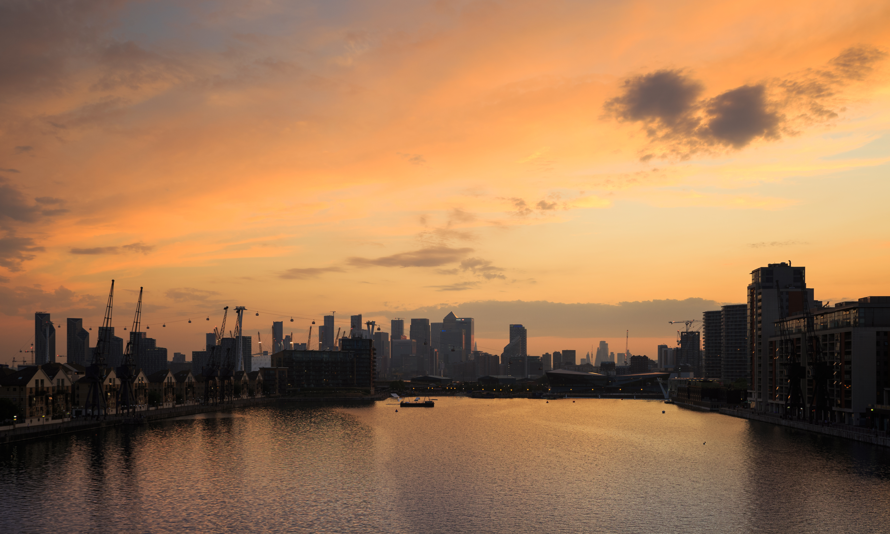
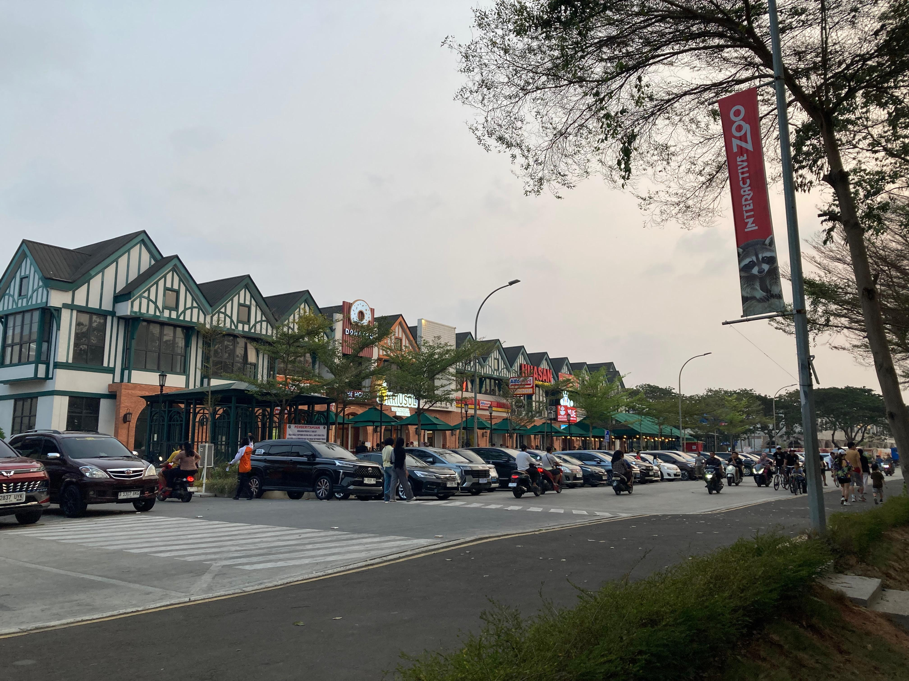
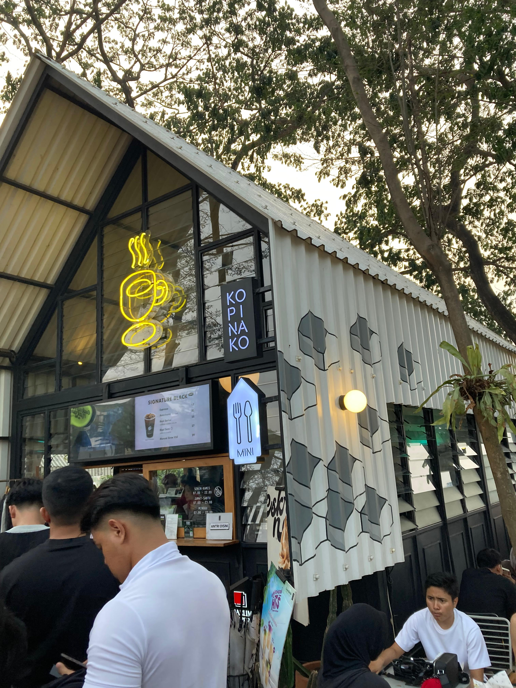
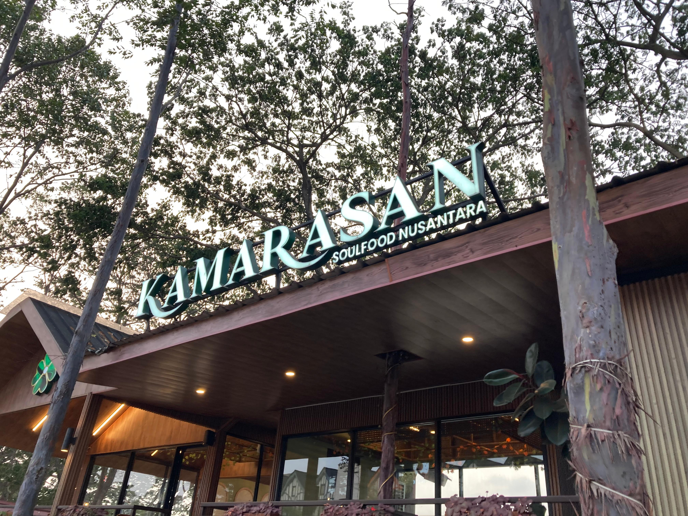
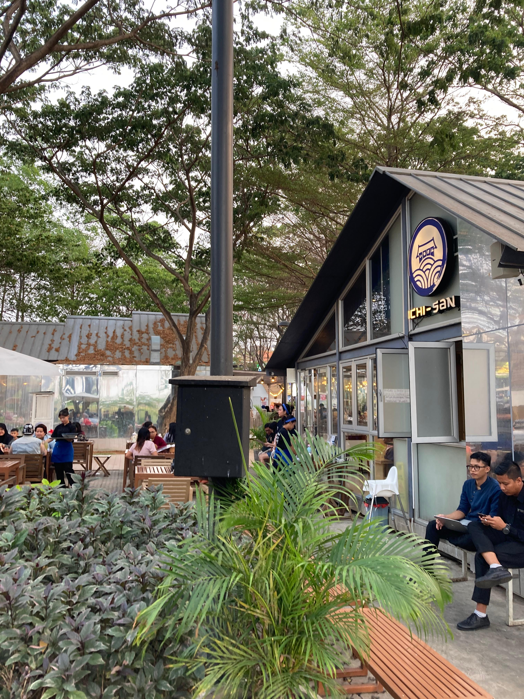

Galeri Senja
Potret kehidupan di Sunset Avenue.




Sunset Avenue menghadirkan ritme hidup yang baru. Sebuah pelarian elegan di mana lanskap hijau bertemu dengan tenangnya air danau, menciptakan panggung sempurna untuk momen-momen emas Anda.

Sunset Avenue Citra 8 merupakan kawasan lifestyle di Jakarta Barat yang menawarkan suasana santai di tepi danau. Cocok untuk kulineran, nongkrong, olahraga, dan menikmati indahnya sunset bersama teman maupun keluarga.
Luas Area Pengembangan
Panorama Tepi Danau
Nikmati berbagai pilihan tempat dan fasilitas untuk bersantai, beraktivitas, dan menghabiskan waktu bersama keluarga maupun teman.
Pilihan artisan cafe dan restoran dengan panorama langsung menghadap air.
Trek berstandar tinggi yang memutari area danau, aman dan bebas kendaraan bermotor.
Taman lanskap estetis untuk piknik, membaca buku, atau sekadar menikmati angin sore.
Area ramah hewan peliharaan dengan fasilitas sanitasi agar anabul Anda ikut bersenang-senang.
Beragam pilihan tempat makan dan kafe untuk menemani waktu santai, mulai dari ngopi, kulineran, hingga nongkrong bersama teman.

Awali pagi dengan secangkir kopi bernuansa danau yang tenang.

Eksplorasi mahakarya kuliner global sambil menikmati gemerlap lampu malam.

Kebutuhan esensial harian dan butik fashion dalam satu kawasan berkelas.
Potret kehidupan di Sunset Avenue.


Berlokasi strategis di Citra 8, Jakarta Barat. Sunset Avenue menawarkan kemudahan akses luar biasa ke berbagai titik vital ibu kota, menjadikannya oase yang mudah dijangkau dari arah mana saja.
Bandara Internasional Soekarno-Hatta
Akses Tol JORR & Tol Dalam Kota
Kawasan CBD Jakarta Barat
Pilih paket pengalaman terbaik untuk kunjungan Anda.
*Harga simulasi untuk keperluan tugas akademik.
"Senja di sini bukan sekadar penanda waktu, melainkan sebuah pelarian elegan yang sempurna dari padatnya rutinitas kota."
Majalah Gaya Hidup Jakarta
Kunjungi Sunset Avenue di Citra 8. Buka setiap hari mulai pukul 07:00 hingga 22:00 WIB.
Lihat Petunjuk Arah